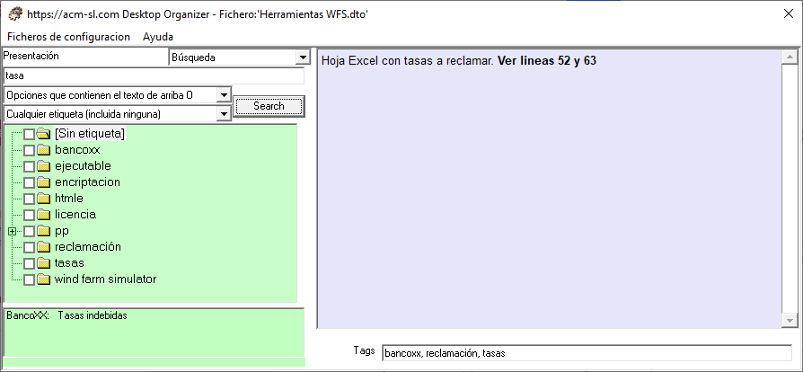

A veces es necesario buscar una determinada Opción de la que no recordamos ni el título, ni el Grupo en el que está situada. El Organizador de Escritorio permite buscar por un texto cualquiera en:
- los títulos de las Opciones y Grupos,
- los Comentarios de Opciones y Grupos. Las palabras candidatas son las que cumplen total o parcialmente el texto utilizado para la pregunta.
Además, para facilitar la búsqueda, se pueden tomar en cuenta conjuntos de etiquetas, bien para que las contengan o no. Por esta razón este tipo de Presentación permite especificar:
- Un texto.
- Un conjunto de etiquetas.
Las combinaciones posibles son:
- Que contenga el texto especificado
- Que contenga el texto especificado O que contenga alguna de las etiquetas marcadas en el árbol de etiquetas
- Que contenga el texto especificado Y que contenga alguna de las etiquetas marcadas en el árbol de etiquetas
- Que contenga el texto especificado O que contenga alguna de las etiquetas NO marcadas en el árbol de etiquetas
- Que contenga el texto especificado Y que contenga alguna de las etiquetas NO marcadas en el árbol de etiquetas
- Que contenga alguna de las etiquetas marcadas en el árbol de etiquetas (sin considerar el texto)
- Que contenga alguna de las etiquetas NO marcadas en el árbol de etiquetas (sin considerar el texto)
En la siguiente figura se muestra un ejemplo del caso b).
